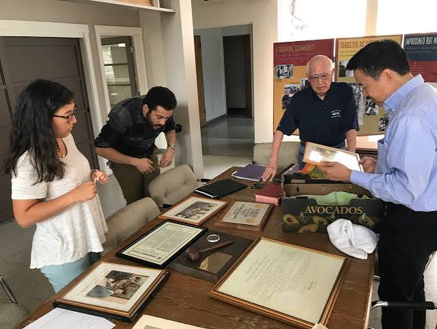

Archiving in Practice
Caring for records starts with small habits. The way an item is handled, stored and labeled affects how long it will last and how easily someone can use it later.

Photo credit: Densho
Handling With Care
Gloves are often used for photographs and some other materials, while clean, dry hands are usually better for paper because gloves can make it harder to feel what you are doing. Staff will tell you which rule applies to the item in front of you.
Protecting Your Own Records
You can apply the same ideas at home to family papers and photos. These simple steps help:
- Keep items away from sunlight, heat and damp rooms
- Store papers flat in clean, acid-free folders or boxes
- Write names, dates and places on the back of photographs in pencil
- Scan important items and keep copies in more than one place
- Record who the people are while someone still remembers
How to Get Involved
You can volunteer with a local archival society, help transcribe documents for an online project, or ask older relatives to share their stories. Every record that is saved and described makes the historical record more complete.